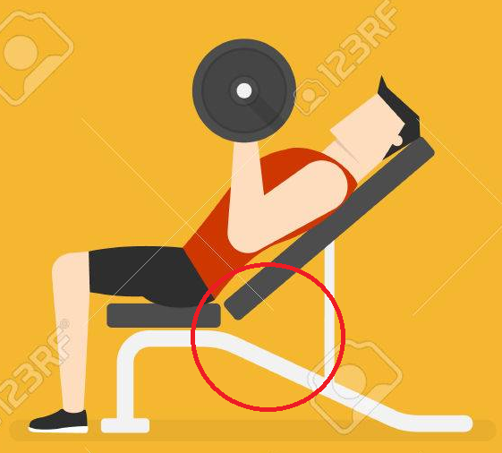

- 참고자료
- 초보자들을 위한 추천 루틴
남자라면 벌판같은 가슴이지
벤치프레스
1. 자신의 어깨넓이 보다 살짝 넓게 바를 잡는다. 이때 자신의 눈 위로 바가 오게 한다.
2. 등을 아치형태로 굽혀주고 다리를 땅에 고정시킨다. 이떄 너무 과하게 굽히지 않도록 한다.

3. 가슴을 벌린다는 느낌으로 바를 천천히 가슴중앙으로 내려 근육을 이완시킨다. 바를 내릴때 팔 각도가 어깨선을 넘지않도록 한다.
4. 내렸던 바를 다시 원위치시킨다. 이때 팔로 미는 느낌이 아닌 팔꿈치를 펴는 느낌으로 바를 올린다.
인클라인 벤치프레스
1. 의자의 각도를 45도~60도 사이로 조정하고 기존 벤치프레스와 마찬가지로 허리를 아치형으로 만들어준다. (의자각도를 90도까지 올려버린다면 가슴이 아닌 어깨에 자극이 가버리니 주의한다.)
2. 바를 어꺠너비보다 살짝 넓게 잡고 바를 천천히 내리는데, 팔꿈치를 몸에서 약간 멀어지게 하며 몸통을 통과하게 한다.
3. 내렸던 바를 가슴을 모은다는 느낌으로 원위치 시킨다. 이때 바를 위쪽으로 밀되 머리가 있는 방향으로 밀도록한다.
딥스
1. 딥스바를 잡고 올라선다. 딥스바를 잡을 때 손목이 밖이나 안으로 꺾이지 않도록 주의한다.
2. 상체를 앞으로 기울이고 발은 X자로 꼬아주거나 살짝 굽혀준다.
3. 팔꿈치를 최대한 몸통에 붙이고 90도가 될때까지 몸을 내려준다.

4. 가슴을 모으는 느낌으로 상체를 그대로 올려준다. 이때 팔꿈치를 완전히 펴는것을 피하도록 한다.
펙덱 플라이
1. 머신에 등부위를 모두 밀착한 채로 앉아, 허리쪽은 살짝 띄워 아치형으로 만들어주고 손잡이가 가슴부의 연장선에 오도록 위치를 조정한다.
2. 손잡이를 잡고 가슴을 수축시킨다. 이때 팔꿈치를 살짝 굽힌 상태로 고정하고 진행하도록 한다.